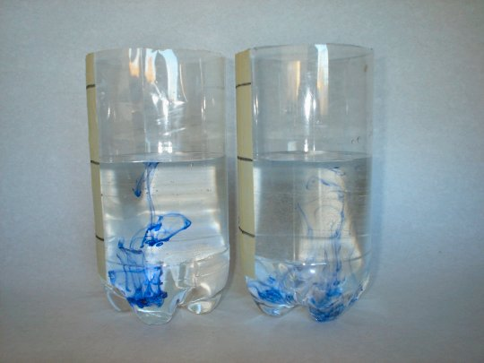
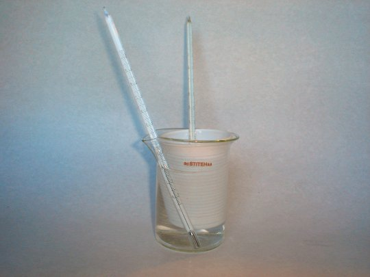

Elemente de termodinamică. |
Noţiuni termodinamice de bază
|
B-3. Interacţiuni termice
Aşa cum remarca fizicianul american Rumford:
"Se întâmplă uneori că, în cursul treburilor şi ocupaţiilor curente, să ni se ofere, de la sine, ocazii favorabile de
a contempla operaţii dintre cele mai curioase ale naturii".
 Activitatea experimentală 3-1
Activitatea experimentală 3-1
Investighează diferenţele dintre apa caldă şi cea rece. Lucrează în echipă.
Pasul 1. Turnaţi câte un strop de cerneală în apa din două borcane - apă rece într−unul şi fierbinte
în celălalt.
Pasul 2. Comparaţi ritmurile în care are loc răspândirea (difuzia) cernelii în apa din cele două borcane.
În paharul cu apă fierbinte, difuzia se produce considerabil mai rapid (figura 3-1).

Figura 3-1. În apa fierbinte cerneala difuzează mai repede.
Aceasta înseamnă că moleculele apei calde se mişcă mai rapid şi au deci o energie cinetică (de agitaţie) mai mare decât
cele ale apei reci!
Iată cât de multă dreptate avea Rumford! Analizând atent un fapt obişnuit, am obţinut concluzia că moleculele unui corp
mai cald au, în medie, energie cinetică (de agitaţie) mai mare. Indicaţiile termometrelor par a fi legate de energia
cinetică medie de agitaţie termică!
Activitatea experimentală 3-2
Investighează interacţiunea dintre apa caldă şi cea rece. Lucrează în echipă.
Pasul 1. Puneţi apă caldă într-un pahar de polistiren - din cele de unică folosinţă. Aşezaţi paharul de
polistiren într−un pahar de sticlă, doar cu puţin mai mare şi care conţine apă rece, ca în figura 3−2.
Pasul 2. Puneţi câte un termometru în apa din fiecare pahar şi urmăriţi evoluţia indicaţiilor celor două
termometre.

Figura 3-2. Un pahar de polistiren cu apă caldă este cufundat în apa rece din paharul de
sticlă.
Treptat, indicaţiile termometrului din apa caldă scad, în timp ce indicaţiile termometrului din apa rece cresc, până când
indicaţiile celor două termometre devin aproape identice. Ce se întâmplă de fapt?
Moleculele apei calde au energii cinetice mai mari decât moleculele apei reci. Ciocnind pereţii paharului de polistiren,
moleculele din interiorul acestuia, mai energice, transferă energie moleculelor mai puţin energice ale
apei mai reci din exteriorul paharului de polistiren.
Între moleculele celor două cantităţi de apă are loc un schimb de energie atâta timp cât energiile cinetice medii de
agitaţie sunt diferite. Se transferă energie de la apa iniţial caldă către apa iniţial mai rece.
 Provocarea 3-1
Provocarea 3-1
Oare apa iniţial caldă din paharul de polistiren transferă energie şi altor corpuri?
Există corpuri mai reci, cu molecule mai puţin energice, decât apa iniţial caldă din paharul de polistiren: aerul din
încăpere, paharul de sticlă, tăblia mesei, chiar şi termometrele. Există totodată şi corpuri mai fierbinţi: Soarele,
încălzitorul cu care ai încălzit apa, filamentul becului care arde în încăpere, etc.
Între toate aceste corpuri are loc schimb de energie: se transferă energie de la corpul mai cald către cel mai rece.
 Numim interacţiune termică transferul de energie de la un corp
mai cald către unul mai rece decât acesta, transferul de energie fiind datorat diferenţelor de energie cinetică medie de agitaţie
termică ale moleculelor celor două corpuri.
Numim interacţiune termică transferul de energie de la un corp
mai cald către unul mai rece decât acesta, transferul de energie fiind datorat diferenţelor de energie cinetică medie de agitaţie
termică ale moleculelor celor două corpuri.
Între o bilă de biliard fierbinte şi una mai rece poate avea loc un transfer de energie prin interacţiune mecanică (ciocnire).
Cea rece poate chiar să transfere energie celei calde, dacă are iniţial o energie cinetică (de ansamblu) mai mare.
Prin interacţiune termică, transferul de energie se face doar într-un singur sens: de la bila fierbinte către cea rece,
până când energiile cinetice medii de agitaţie termică ale moleculelor celor două bile se egalează!